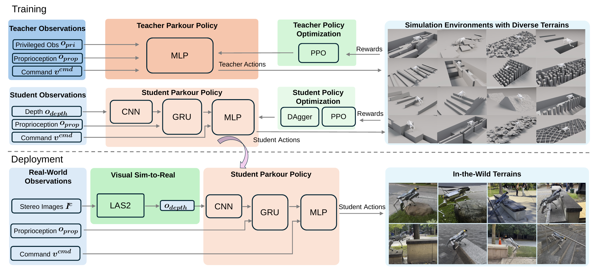

Visual locomotion methods for legged robot parkour face challenges in transferring policies from simulations to real world environments as well as generalizing to unseen terrain geometries and layouts. In this paper, we introduce Visual Sim-to-Real Parkour (ViSiR-Parkour), a novel architecture for generalizable legged robot parkour in the wild. ViSiR-Parkour trains a single teacher policy with privileged observations on a scaled-up distribution of diverse primitive and combination terrains. A unique progress-aware terrain reallocation curriculum learning approach uses traversal success rates to reallocate training robots to terrain types requiring further learning. A visual student policy is then trained using hybrid policy learning with teacher supervision to acquire locomotion skills and task rewards optimization to improve terrain traversal beyond imitating teacher actions. Our visual sim-to-real method is the first to apply learning-based stereo matching to legged robot parkour, transforming onboard stereo observations into clean metric depth images consistent with the simulated visual inputs obtained during training. Our ViSiR-Parkour enables direct policy transfer without depth-noise augmentation or real-world policy fine-tuning. Simulated and real-world experiments demonstrate the performance and generalizability of ViSiR-Parkour across diverse challenging indoor and outdoor terrains. A scalability study shows improved generalizability to unseen out-of-distribution terrains as the number of training terrain types increases. Ablation studies validate the main design choices of the architecture.
